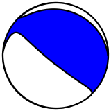
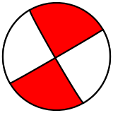
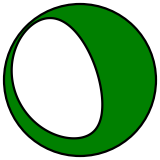

The following lines show how to create a graphical representation of a focal mechanism.
from obspy.imaging.beachball import Beachball
mt = [0.91, -0.89, -0.02, 1.78, -1.55, 0.47]
Beachball(mt, size=200, linewidth=2, facecolor='b')
mt2 = [150, 87, 1]
Beachball(mt2, size=200, linewidth=2, facecolor='r')
mt3 = [-2.39, 1.04, 1.35, 0.57, -2.94, -0.94]
Beachball(mt3, size=200, linewidth=2, facecolor='g')
[source code, hires.png, pdf]

[source code, hires.png, pdf]

[source code, hires.png, pdf]
